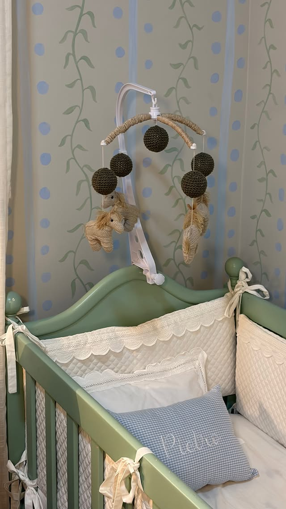
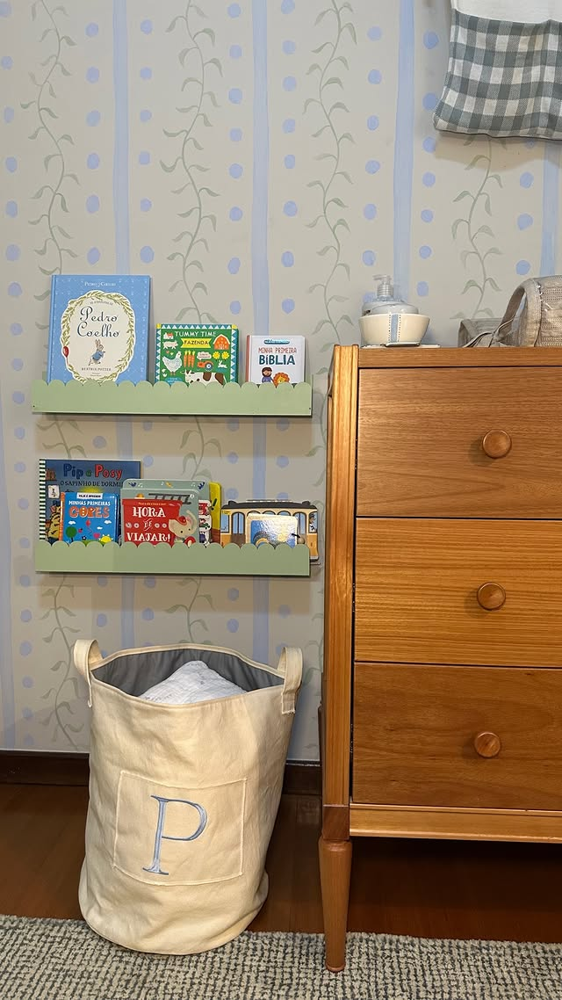
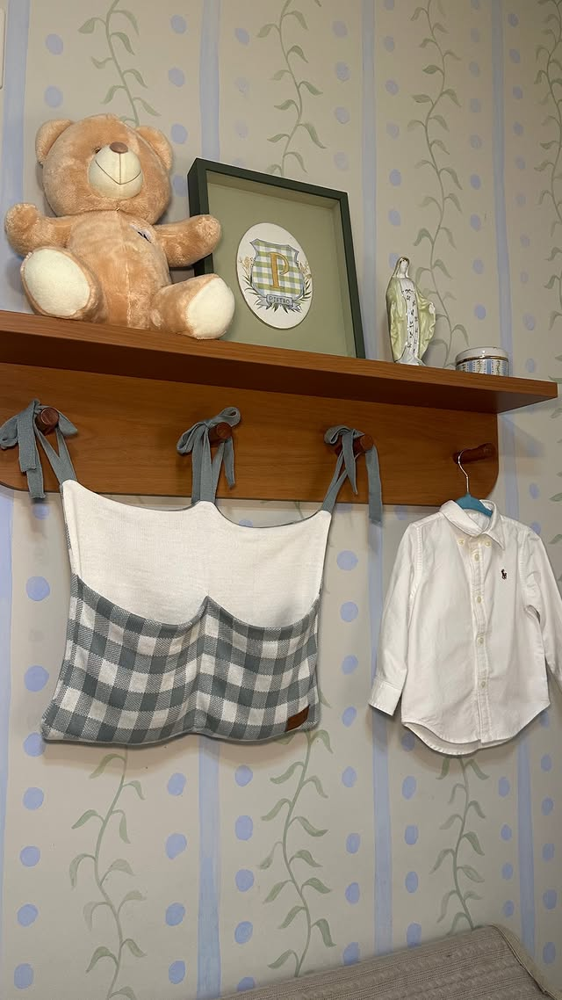
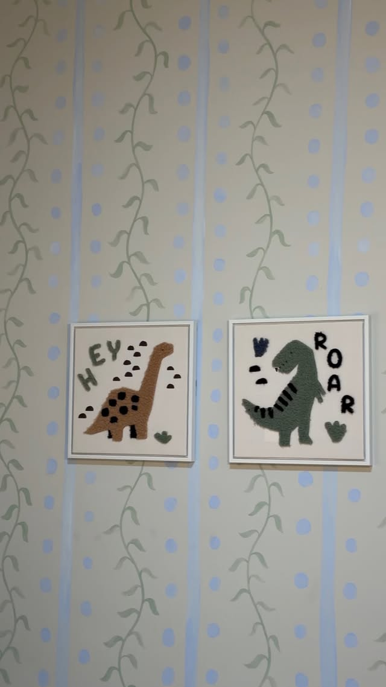
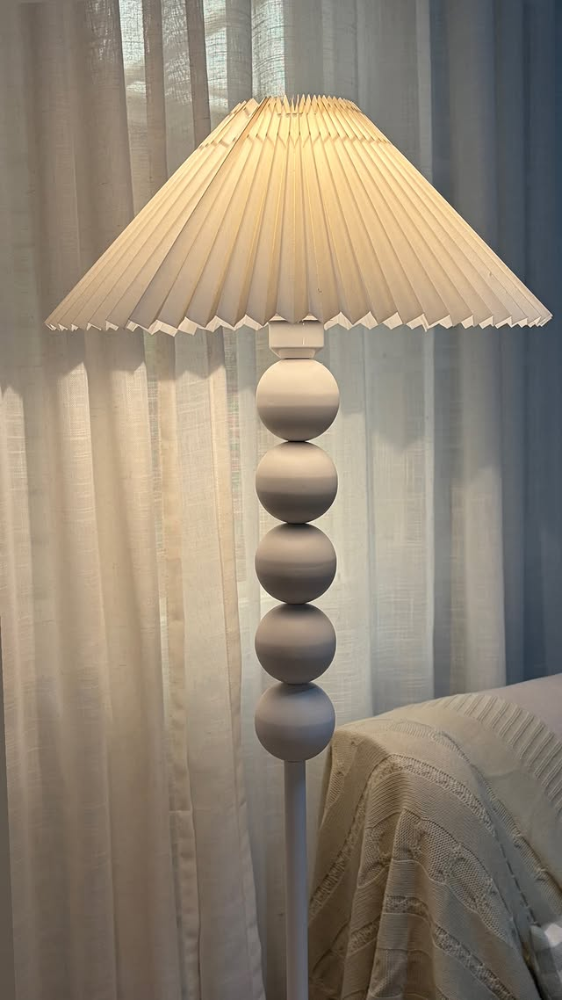
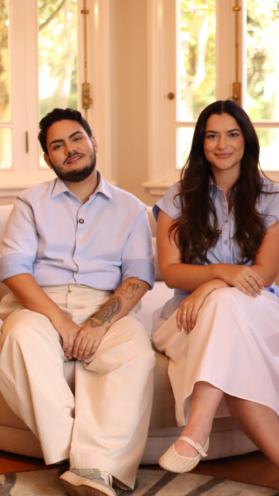

Arquitetura
que se vive.
Projeto de arquitetura e interiores para quem exige o mesmo cuidado no desenho e na execução. Cada espaço é resolvido inteiro — da primeira linha à última entrega.
O projeto não termina no desenho.
A DECÔ nasceu da parceria entre Andreza Bertollazzi e Vinicius Gutierrez. Dois olhares sobre o mesmo espaço — e uma exigência só: que a casa funcione tão bem quanto aparenta.
Trabalhamos com poucos projetos por vez. É o que permite acompanhar cada etapa de perto: o estudo, a escolha do material, o detalhe da marcenaria, a visita de obra. Nada é delegado ao acaso e nada é resolvido em catálogo.
O resultado é um espaço que responde a quem mora nele — à rotina, à luz do terreno, ao jeito de receber. Arquitetura e interiores pensados juntos, desde a primeira conversa.
O que fazemos
Projeto de Arquitetura
Do estudo preliminar ao executivo. Implantação, planta, volumetria e todo o detalhamento técnico que a obra precisa pra sair como foi desenhada.
Interiores
Layout, marcenaria, iluminação, revestimento e mobiliário. O interior é projetado junto com a arquitetura, não depois dela.
Acompanhamento de Obra
Visita técnica, compatibilização e decisão em canteiro. É a etapa que separa o projeto bonito no papel do espaço entregue certo.
Ambiente Único
Um cômodo resolvido por inteiro, para quem não vai reformar a casa toda — com o mesmo nível de detalhe de um projeto completo.
Projetos

Casa J.B
Projeto de arquitetura e interiores desenvolvido por inteiro pelo escritório — da concepção ao acompanhamento da execução.
- Local
- Ribeirão Preto — SP [CONFIRMAR]
- Escopo
- Arquitetura + Interiores [CONFIRMAR]
- Ano
- [CONFIRMAR]

Obra Alma
Projeto acompanhado em canteiro do início ao fim, com decisão técnica tomada no lugar — onde ela custa menos e resolve mais.
- Local
- [CONFIRMAR]
- Escopo
- Projeto + Acompanhamento [CONFIRMAR]
- Ano
- [CONFIRMAR]





Quarto Pietro
Quarto de bebê resolvido inteiro — papel de parede, prateleiras, iluminação e enxoval na mesma paleta de verde-sálvia, azul e cru. Cada peça foi escolhida pra compor com o desenho da parede, não pra preencher espaço.
- Local
- [CONFIRMAR]
- Escopo
- Interiores — quarto de bebê [CONFIRMAR]
- Ano
- [CONFIRMAR]
Imagens de projeto e de obra assinadas pelo escritório. Abra qualquer uma para ver em tela cheia.


Como trabalhamos
Conversa
Entendemos o espaço, a rotina e o orçamento antes de desenhar qualquer linha.
Estudo
Primeiras propostas de layout e partido, apresentadas pra decidir junto.
Projeto
Detalhamento executivo: marcenaria, iluminação, acabamento e memorial.
Obra
Acompanhamento em canteiro até a entrega do espaço pronto pra usar.
Quem assina

Dois arquitetos, um escritório. Todo projeto passa pelos dois — e é isso que garante que nada seja resolvido no automático.
O contato é direto com quem desenha. Não há camada de intermediário entre a sua ideia e o projeto que vai pra obra.
Vamos conversar sobre o seu espaço.
Conte o que você quer resolver. Respondemos com os próximos passos, o escopo que faz sentido e o prazo do estudo.
Avenida Independência, 3840
Residencial Flórida — Ribeirão Preto/SP
14026-160